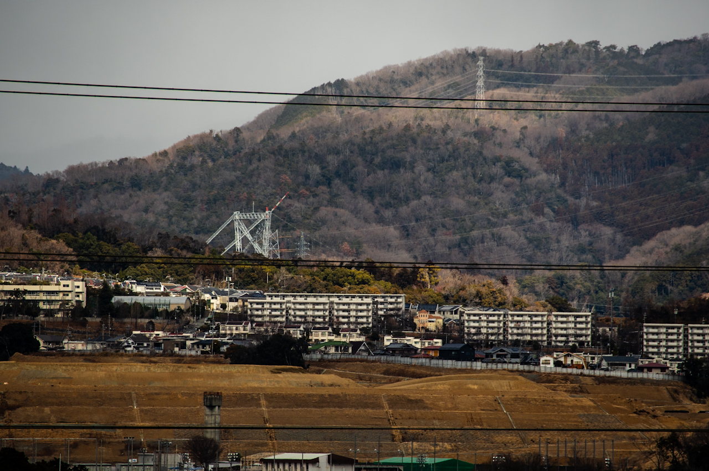
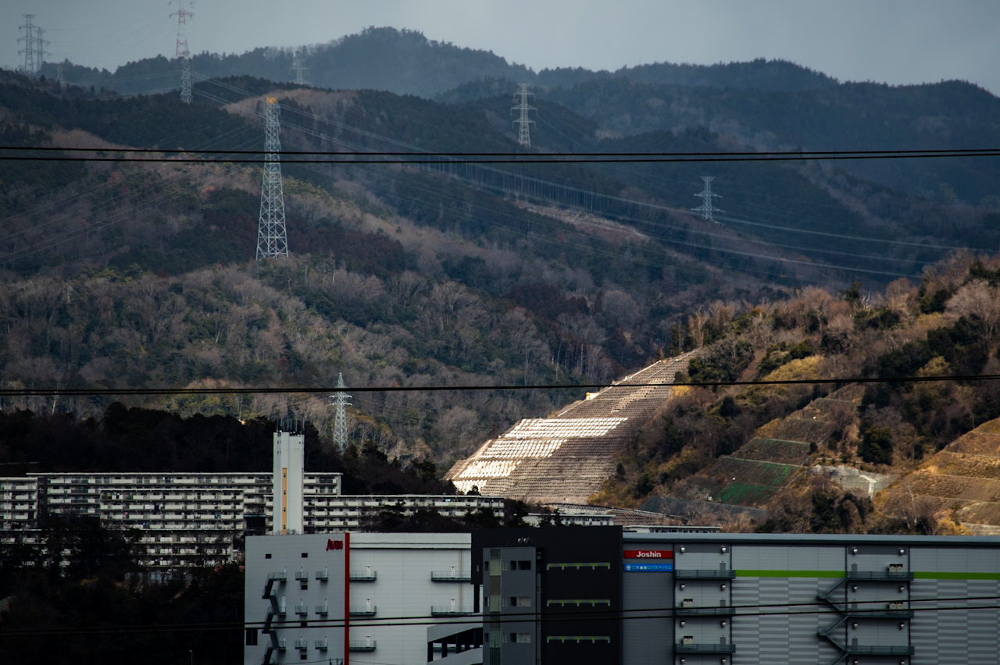

日本で最も長い吊橋が大阪府茨木市に建設中だ。
その一部である主塔が、自宅の窓から見えることに気がついた。
するとダム本体はもう少し南の法面が見えてる辺りか。さすがに見えないけど。
2 時間ほど歩けば、ダムに着くんじゃないかな。道もだいたいわかるし。追手門学院大学の横や安威の旧集落を抜けて安威川そばの道路に出たら、あとは道に沿って亀岡方面にいけば 30 分ほどでついてしまうはず。
Google Maps で検索したらサニータウン経由で行くルートが紹介されるけれど、住んでるところからだとたぶん自転車が一番はやい。傷害の都合で自転車はまだ公道は無理なので、たとえ歩くとしても 2 時間弱で、恐らく JR で駅前まで出てサニータウン行きに乗り換えるより、わずかに短い時間で着くはず。